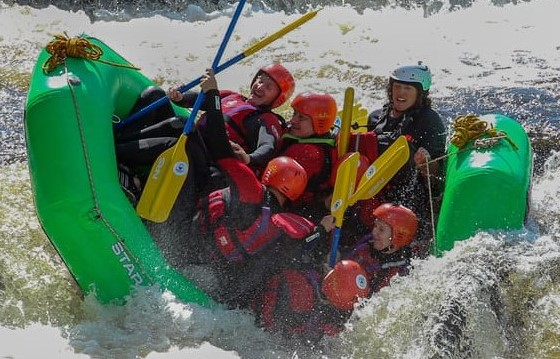
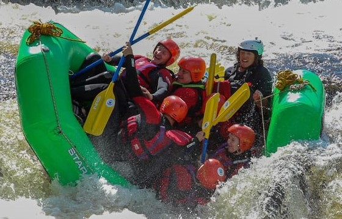

At Elite Rafting Co., our mission is to offer unforgettable white-water adventures that connect people to the spirit of Uganda’s rivers through professionalism, safety, and heart. We believe in courage, connection, and respect—for the river, our guests, and one another—upholding a promise of adventure and empowerment in every ride. Driven by our passion and guided by our values, we invite you to “Ride the waves. Feel the freedom.

 
